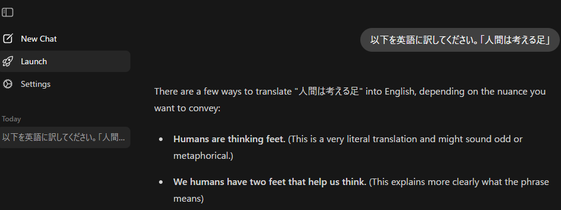

パッケージのインストール・ロード
pacman::p_load(tidyverse, ellmer, ollamar, mall)RからLLM（大規模言語モデル、Large Language Model）を利用する場合、リモートLLM（Web上で提供されているLLMのAPIに接続して利用する）と、ローカルLLM（自分のPCでLLMの演算を行う）の2つを利用することができます。RでのLLMの利用についてはQiitaに詳しい記事（「R言語とLLMの連携」がありますが、ココでも簡単に紹介しようと思います。
リモートLLMを利用する場合、Rではellmerパッケージを利用します。ellmerパッケージではいろいろなLLMモデルのAPI（Anthropic、OpenAI、Geminiなど）を用いてLLMによる推論を行います。
リモートLLMの利点はそのスピードと性能です。リモートLLMはその提供元のサーバーで演算を行うため、サーバーの演算能力に従いその演算速度が決まります。AIの提供元で利用しているサーバーは大抵超高性能で、お金を払わないプランを用いても回答がすぐに返ってきます。一方で、リモートLLMの利用には大抵お金がかかり、チャットを投げる量（トークン）も制限される場合があります。
ローカルLLMを利用する場合には、ollamarパッケージを用います。ollamarはLLMを動かすためのローカルサーバーを簡単に管理できるソフトウェアである、Ollamaを利用したパッケージです。ollamarパッケージを用いることで、自分のPCにLLMのモデルをダウンロードし、チャットを投げて回答を得ることができます。
ローカルLLMを用いるとお金を使わず、トークンの制限もありません。一方で演算速度は自分のPCのスペック（特にGPU）に依存し、高性能なGPUを備えていないPCでは演算にとてつもなく時間がかかります。
この2つのパッケージ（ellmerとollamar）を用いれはLLMを利用することはできますが、いずれも常にチャットの内容を即時にLLMに投げて、返答を返す形で機能します。また、同じ質問をする場合には、いずれもLLMにすぐにチャットを投げてしまうため、同じ回答を得るのにもう一度演算を行う場合があります。これではトークンや時間を無駄遣いしてしまいます。
そこで、ellmerとollamarの機能を補いつつ、問い合わせの内容を絞り、データフレームの列をチャットに投げ、一度問い合わせた内容をキャッシュ（cache）に残すことでLLMへの問い合わせ回数を減らすことができるように設計されたライブラリがmallです。mallを用いれば、LLMにかかるコストを調節し、一度回答を得たチャットに対してはキャッシュを利用して速やかに返り値を得ることができます。
この章では、まずellmer、ollamarの簡単な使い方を説明し、その後mallを使ってデータフレームに記載した文字列をLLMに投げて回答を得るところまで説明します。
まずはellmer、ollamar、mallをそれぞれインストールします。またデータフレームの取り扱いのためにtidyverseをロードします。
パッケージのインストール・ロード
pacman::p_load(tidyverse, ellmer, ollamar, mall)ellmerでは、まずはどのリモートLLM、AIモデルを用いるのかをまず選択します。例えばOpenAIのLLMであるGPTを用いるのか、AnthropicのClaudeを用いるのか、GoogleのGeminiを使うのかでそれぞれ利用する関数が異なります。
AIモデルを選択したら、次にそのLLMのAPIキーを取得する必要があります。GPT、Claude、GeminiのAPIキーの取得方法についてはそれぞれのページで確認してください。
APIキーを取得したら、APIキーを環境変数に設定します。GPTではOPENAI_API_KEY、ClaudeではANTHROPIC_API_KEY、GeminiではGEMINI_API_KEYをそれぞれ設定します。環境変数の設定にはRではSys.setenv関数を用います。WindowsではGUIやコマンドプロンプトを用いて設定することもできます。
環境変数を設定する
Sys.setenv(OPENAI_API_KEY = "XXXXXXXXXXXXXXXXXX")もう一つの方法は、Rの環境（.Renviron）にAPIキーをセットする方法です。usethis::edit_r_environ関数を用いることで、環境変数をRで設定することができます。usethis::edit_r_environを実行すると環境のファイルの中身が表示されるので、その中身に環境変数を追記し、保存します。
.Renvironを編集する
usethis::edit_r_environ()APIキーを設定すると、ellmerからそれぞれのLLMに直接アクセスできるようになります。LLMにアクセスする場合には、まず接続用のオブジェクトを作成します。このオブジェクト作成の関数は利用するLLMによって異なり、GPTではchat_openai関数、Claudeではchat_anthropic関数、Geminiではchat_google_gemini関数を引数なしで用います。これらの関数はR6オブジェクトを作成するための関数で、この関数の返り値をchatなどの名前の変数に代入します。
LLM接続のためのR6オブジェクトを作成する
# 引数にモデル名（例えば"gpt-4.1"）を指定すると、用いるモデルを指定できる
# 利用できるモデルはmodels_openai()で確認できる（"gpt-4.1"はデフォルト）
chat <- chat_openai()LLMにチャットを投げる場合には、chat$chatメソッドを用います。chat$chatメソッドの引数として、チャットの内容（文字列）を取ることで、Markdown形式でLLMから返答を受け取ることができます。また、chat$chatメソッドを実行すると、chatオブジェクト内に会話の内容が記録され、次のチャットの問い合わせ時にはこの記録が文脈として利用されます。
LLMへのチャットを送信し、返答を受信する
chat$chat("Who created R?")リモートのLLMを利用すると、トークンを消費します。トークンはLLMに投げるチャットのワード数（文字数）を反映するもので、利用したトークンが増えるほど支払いが増えていきます。chatオブジェクトを用いたチャットでどの程度トークンを利用したのかを確認するには、token_usage関数を用います。
トークンの利用を表示する
token_usage()ココまではリモートLLMを利用する方法を説明しましたが、ココからはollamarパッケージを用いて、自分のPCでLLMを動かす方法について説明します。
ollamarパッケージは、Ollamaというローカル環境でLLMを動かすためのツールを利用して、RでLLMを用いる仕組みになっています。
ollamarを使う場合、まずはOllamaのアプリケーションをダウンロードし、インストールする必要があります。Ollamaをインストールすると、OllamaのローカルサーバーでLLMが動くようになります。

このOllamaのアプリケーションを用いることで、LLMを利用することができます。

ただし、Ollamaをインストールするだけでは、LLMをGPUで演算してくれない場合があります。QiitaにOllamaにGPUを利用させる方法についての記事がありますので、参考にして設定するとよいでしょう。
簡単に説明すると、NIVDIAのGPUであれば
をあらかじめインストールしておくとよいようです。
また、Redditの記事に記載されている通り、
nvidia-smi -Lで表示されるUUIDを調べて、CUDA_VISIBLE_DEVICES="UUID"という環境変数を設定しておくとGPUを使ってくれるようになる場合もあるようです。
OllamaをRから動かすためのパッケージがollamarです。Ollamaが起動している状態で、test_connectionを実行すると、Ollamaのローカルサーバーが利用できる状態であるかを確認することができます。
ollamar：Ollamaの起動の確認
# Ollama appが起動していると、ローカルサーバーが立ち上がっていることが確認できる
test_connection()Ollama local server running<httr2_response>
GET http://localhost:11434/
Status: 200 OK
Content-Type: text/plain
Body: In memory (17 bytes)Ollamaでもollamarでも、まずはLLMのモデルをダウンロードする必要があります。Ollamaではターミナルでollama pull モデル名を実行することでLLMのモデルをダウンロードすることができます。
ollama pull qwen3.6ダウンロードするモデルはOllamaのModelに関するページから選択することができます。LLMのモデルはパラメータ数（4bとか、8bといった数値で示されているもの）と、モデルの最適化の程度（コーディング用、論理思考用、翻訳用など）で選択します。普通は新しいものほど最適化されていて、少なめのパラメータ数でもそれなりの答えを返してくれるようになっています。
ollamarでは、pull関数でLLMのモデルをダウンロードすることができます。この関数は上のollama pullを実行するだけの関数です。
LLMモデルのダウンロード
# 汎用のモデル、日本語に強い
pull("qwen3.6")
# 翻訳専用のモデル（Google Deepmind）
pull("translategemma:12b")上のpullでは、Alibabaの高性能LLMであるqwen3.6とGoogle Deepmindのtranslategemmaをダウンロードしています。qwen3.6は汎用のLLMで、パラメータ数は27b（270億）です。translategemmaは翻訳を専門とするLLMで、パラメータ数は12bのものをダウンロードしています。正直、qwen3.6は私のPC（GeForce RTX3070、VRAMが8GB）には重すぎるので、演算にとてつもなく時間がかかります。実用的ではありませんが、モデルの比較のためにダウンロードしています。
ollamarでLLMを利用する場合には、generate関数を用います。このgenerate関数は第一引数にLLMのモデル名、第ニ引数にLLMに投げるチャットを引数に取ります。LLMのモデル名はダウンロード済みのモデル（list_modelsで確認できます）から選択します。このgenerateの返り値をそのまま呼び出すとOllamaのローカルサーバーのレスポンスとBodyというものを含むものが返ってきます。
LLMにチャットを投げる
# 使えるモデルのリスト
list_models() name size parameter_size quantization_level
1 qwen3.6:latest 23.9 GB 36.0B Q4_K_M
2 translategemma:12b 8.1 GB 12.2B Q4_K_M
modified
1 2026-06-27T10:38:09
2 2026-06-27T10:38:10# モデルにレスポンスを求める（時間がかかる）
resp <- generate("qwen3.6", "tell me a 5-word story")
resp<httr2_response>
POST http://127.0.0.1:11434/api/generate
Status: 200 OK
Content-Type: application/json
Body: In memory (19237 bytes)LLMの出力を確認するには、resp_process関数を用います。第二引数（output）には返り値のデータ型を文字列で指定します。
LLMの出力を確認する
# 出力を確認
ollamar::resp_process(resp, "text")[1] "Last star blinked out forever."出力をデータフレームの形とするには、output引数に"df"を指定します。
LLMの出力をデータフレームで返す
# データフレームで出力
ollamar::resp_process(resp, output = "df")# A tibble: 1 × 3
model response created_at
<chr> <chr> <chr>
1 qwen3.6 Last star blinked out forever. 2026-07-03T12:39:11.9891089Zココまでがollamarの基本的な利用方法です。不要なモデルはdelete関数で削除することもできます。
OllamaのLLMモデルを削除する
# モデルを削除する
ollamar::delete("qwen3.5:4b")
ollamar::delete("translategemma:4b")ではココからは、上記のellmerとollamarを利用し、決められたタスクをこなすためのパッケージである、mallについて説明していきます。
mallは、データフレームの列に記録した文（文字列）をLLMに投げることで、その文の感情の評価（sentiment）、翻訳（translate）、要約（summarize）、分類（classify）、抽出（extract）、適合性（verify）の6つのタスクを実行し、データフレームの列として結果を返してくれます。
mallに文字列のデータフレームを投げるためのサンプルとして、Publilius Syrusの名言集をrvestで入手し、データフレームとして利用することにします。
このthelatinlibraryのページにはラテン語の名文がたくさん収集されています。興味があれば覗いてみて下さい。
ご存知の通り、ラテン語はヨーロッパでは19世紀ぐらいまで学術語として用いられていましたが（ヨーロッパでは最近までラテン語を博士論文に使う人もいたようです）、話者は（趣味で使う人以外には）おらず、学術語としても英語やドイツ語にとって変わられています。LLMの学習に用いることのできるウェブ上のラテン語の情報は限られているため、LLMには難しめのタスクかもしれません。
利用するPublilius Syrusの名言のデータフレームを以下に示します。一度にたくさんの行をLLMに投げたいところですが、上記の通り、私のPCではローカルLLMに大きなタスクは投げられません。ですので、はじめの3行だけ利用することにします。
LLMに演算させるためのデータフレーム
# LLMに使う文を準備
d <- read.csv("./data/PVBLILIVS_SYRVS_SENTENTIAE.csv", header=F) |> _[-1, 2]
head(d)[1] "Alienum est omne, quicquid optando evenit."
[2] "Ab alio expectes, alteri quod feceris."
[3] "Animus vereri qui scit, scit tuta ingredi."
[4] "Auxilia humilia firma consensus facit."
[5] "Amor animi arbitrio sumitur, non ponitur."
[6] "Aut amat aut odit mulier, nil est tertium."# tibbleを準備
d_d <- as_tibble(d)
d_3 <- d_d[1:3, ]ではまずは、ellmerの機能を用いてリモートLLMを用いる方法について説明します。リモートLLMを用いる場合には、ellmer::chat関数（chatGPTならchat_openai関数）をllm_use関数の引数に取ります。
ellmerの機能を用いてリモートLLMを利用する
chat <- chat_openai()
llm_use(chat)リモートとローカルLLMの違いは、このllm_use関数の引数だけです。ollamarの機能を用いてローカルLLMを用いる場合には、llm_use関数に"ollama"とLLMのモデル名を指定します。
ただし、LLMは同じ質問に対して、ほんの少しずつ異なる回答を返すようにできています。Rではできれば同じ回答を得られる方がよい場合もありますので、乱数を用いる場合にset.seedを用いるのと同様に、llm_use関数ではseedとtemperatureを引数として設定することができます。このseedとtemperatureはいずれもLLMの回答のランダム性を調整するための引数で、seedは固定、temperatureは0に設定することで、LLMからの回答を固定することができます。
また、LLMの回答が同じとなるようにしておくのであれば、以前LLMから得た回答と同じものを何度もLLMに演算させる必要はありません。ですので、mallでは.cache変数に回答を保持しておくキャッシュファイルを設定することができます。
以下の例では、qwen3.6を用いて、回答は固定し、キャッシュとしてPVBLILIVS_SYRVS_qwen_cacheというファイルを準備するように指定しています。
ollamarの機能を用いてローカルLLMを利用する
llm_use("ollama", "qwen3.6", seed = 100, temperature = 0, .cache = "./cache_llm/PVBLILIVS_SYRVS_qwen_cache")── mall session object Backend: ollama
LLM session:
model:qwen3.6
seed:100
temperature:0
R session: cache_folder:./cache_llm/PVBLILIVS_SYRVS_qwen_cache上で述べた通り、mallで実行可能なタスクは以下の6つです。それぞれに対応する関数がmallには備わっています。
llm_sentiment、llm_vec_sentimentllm_translate、llm_vec_translatellm_summarize、llm_vec_summarizellm_classify、llm_vec_classifyllm_extract、llm_vec_extractllm_verify、llm_vec_verifyそれぞれのタスクに対応した2種類の関数があり、左がデータフレーム、右がベクターを引数に取る関数です。
感情の評価（sentiment）は分類問題として昔から取り組まれてきたものです。文面を評価し、ポジティブな文であるか、ネガティブな文であるか、どちらでもないかを評価します。mallではllm_sentimentかllm_vec_sentimentで文字列のsentimentを評価することができます。
llm_sentimentの引数はデータフレームと評価する文字列の列名です。返り値は"positive"、"negative"、"neutral"の3つで、結果は.sentimentという名前の列に追加されます。pred_name引数に文字列を指定すると、結果の列名を指定することもできます。
sentimentの評価
# positive, negative, neutralを評価する
d_3 <- llm_sentiment(d_3, value) # データフレームと列名を指定翻訳はそのままで、文字列を翻訳するためのものです。翻訳はllm_translate、llm_vec_translateで評価することができます。llm_translateには、データフレームと列名の他に、翻訳先の言語を指定するlanguageを引数に指定します。
翻訳
# 翻訳する
d_3 <- llm_translate(d_3, value, language = "Japanese", pred_name="translation_jp")AIに文の要約を任せたことがある方は多いでしょう。llm_summarize、llm_vec_summarizeを用いることで、文字列を要約することができます。llm_summarizeはデータフレームと列名に加えて、要約文の最大の文字数（max_words）を引数に指定します。LLMに与えているのは日本語ですが、要約文はなぜか英語になります。
要約
# 要約する
d_3 <- llm_summarize(d_3, translation_jp, max_words = 10, pred_name="summary")分類は31章で説明した分類の手法を、LLMを分類器として用いて行うものです。llm_classifyはlabels引数に分類したいカテゴリをベクターで指定し、文章にそのlabelsを付与して、分類します。
分類
# 分類する
d_3 <- llm_classify(d_3, translation_jp, labels = c("positive", "negative"), pred_name="classify")抽出は、文章から指定した要素を取り出すものです。llm_extractはlabels引数に指定したものに適合する要素を文章から抽出します。
抽出
# 文中から抽出する
d_3 <- llm_extract(d_3, value, labels = "verb", pred_name="extract")適合性の評価は、その文が指定した条件に適合するかどうかを評価するものです。llm_verifyはwhat引数に指定した条件に文が適合するかどうかを評価します。返り値は適合していたら1、そうでなければ0が返ってきます。返り値はyes_no引数に要素が2個のfactorで指定することもできます。
適合性の評価
# 文への適合性を評価する（1ならTRUE、0ならFALSE）
d_3 <- llm_verify(d_3, value, what = "Is this a famous Latin quotation?", pred_name="verify")ここまでmallの関数でqwan3.6を用いてきましたが、この5つの演算に900秒以上かかっています。qwan3.6ではラテン語であってもそこそこ正確な訳文や分類が返ってきているのが分かります。1度目の演算はとても時間がかかりますが、mallは結果をキャッシュしてくれるため、2回目以降に同じ文を与えると瞬時に結果が返ってきます。
演算結果
# 906.23秒で完了（2回目以降はキャッシュから返すため、瞬時に結果が返ってくる）
d_3 |> knitr::kable()| value | .sentiment | translation_jp | summary | classify | extract | verify |
|---|---|---|---|---|---|---|
| Alienum est omne, quicquid optando evenit. | negative | 願って得るものはみな他事なり。 | wishes always bring unexpected outcomes | negative | evenit | 1 |
| Ab alio expectes, alteri quod feceris. | neutral | 自分がされて嬉しいことは、他人にもしてやれ。 | treat others as you wish to be treated | positive | expectes | 1 |
| Animus vereri qui scit, scit tuta ingredi. | neutral | 畏れることを知る者は、安全な道を歩くことを知る。 | knowing what to fear means walking safely | positive | scit | 1 |
では、次にtranslategemma:12bで同じ演算をしてみます。こちらは40秒ぐらいで演算が終わります。ただし、見ての通り翻訳以外のタスクではNAが返ってきています。
translategemma:12bを用いる
llm_use("ollama", "translategemma:12b", seed = 100, temperature = 0, .cache = "./cache_llm/PVBLILIVS_SYRVS_gemma_cache")── mall session object Backend: ollama
LLM session:
model:translategemma:12b
seed:100
temperature:0
R session: cache_folder:./cache_llm/PVBLILIVS_SYRVS_gemma_cache# positive, negative, neutralを評価する
d_3 <- llm_sentiment(d_3, value) # データフレームと列名を指定! There were 3 predictions with invalid output, they were coerced to NA# 翻訳する
d_3 <- llm_translate(d_3, value, language = "Japanese", pred_name="translation_jp")
# 要約する
d_3 <- llm_summarize(d_3, translation_jp, max_words = 10, pred_name="summary")
# 分類する
d_3 <- llm_classify(d_3, translation_jp, c("positive", "negative"), pred_name="classify")! There were 1 predictions with invalid output, they were coerced to NA# 文中から抽出する
d_3 <- llm_extract(d_3, value, "verb", pred_name="extract")
# 文への適合性を評価する（1ならTRUE、0ならFALSE）
d_3 <- llm_verify(d_3, value, "Is this a famous Latin quotation?", pred_name="verify")! There were 3 predictions with invalid output, they were coerced to NA実際に結果を見てみると、文体がqwen3.6とは少し異なります。qwen3.6は箴言っぽい文調で返ってきて、translategemmaは現代文っぽいものが返ってきます。どちらかというとqwen3.6の方が正確な訳に近いように思います。また、英文も随分異なります。分類などはtranslategemmaではできません。
やはり高性能かつ新しいqwen3.6の方が回答も優れているように見えます。ただし、演算コストが桁違いなので、簡単な問題であれば小さいモデルであるtranslategemma:12bを選ぶことにも利点はあるでしょう（translategemmaには27bのモデルもあるので、こちらを使えばもう少し翻訳はうまくなるかもしれません）。
translategemma:12bの演算結果
# 42.63秒で完了
d_3 |> knitr::kable()| value | .sentiment | translation_jp | summary | classify | extract | verify |
|---|---|---|---|---|---|---|
| Alienum est omne, quicquid optando evenit. | NA | 何でもかんでも、望んだ結果になるわけではない。 | not everything leads to desired outcomes. | NA | evenit | NA |
| Ab alio expectes, alteri quod feceris. | NA | 他人に何を期待するかは、自分自身が相手にどうしたかによって決まる。 | expectations depend on how you treat others. | positive | expectes | NA |
| Animus vereri qui scit, scit tuta ingredi. | NA | 心に恐れを持つ者は、安全な道を進むことを知っている。 | fearful people choose safe paths, understanding their value. | positive | scit | NA |
では、最後にラテン語と英語をqwen3.6とtranslategemmaで演算し、回答を比較してみます。以下では、llm_vec_の関数でベクターを用いて演算を行っています。ベクターを引数に取ると、返り値もベクターで返ってきます。
# 英文はGeminiに作成してもらったもの（日本語もGeminiが生成）
comp_sentences <- read.csv("./data/llm_comparison_sentences.csv")
llm_use("ollama", "qwen3.6", seed = 100, temperature = 0, .cache = "./cache_llm/PVBLILIVS_SYRVS_qwen_cache")── mall session object Backend: ollama
LLM session:
model:qwen3.6
seed:100
temperature:0
R session: cache_folder:./cache_llm/PVBLILIVS_SYRVS_qwen_cache# 400.7秒
qwen_translate <- llm_vec_translate(d[11:15], language = "Japanese") # Latin
# 538.36秒
qwen_Eng <- llm_vec_translate(comp_sentences[, 1], language = "Japanese") # English
llm_use("ollama", "translategemma:12b", seed = 100, temperature = 0, .cache = "./cache_llm/PVBLILIVS_SYRVS_gemma_cache")
── mall session object
Backend: ollamaLLM session: model:translategemma:12b
seed:100
temperature:0
R session: cache_folder:./cache_llm/PVBLILIVS_SYRVS_gemma_cache# 11.57秒
gemma_translate <- llm_vec_translate(d[11:15], language = "Japanese") # Latin
# 46.61秒
gemma_Eng <- llm_vec_translate(comp_sentences[, 1], language = "Japanese") # English| latin | qwen | gemma |
|---|---|---|
| Alienum aes homini ingenuo acerba est servitus. | 他人への借金は自由人にとって苦しい奴隷状態である。 | 自由を奪われることは、生まれつき自由な人間にとって苦痛である。 |
| Absentem laedit, cum ebrio qui litigat. | 酔夫と争う者は、不在の者を害す。 | 酔っ払って喧嘩する人は、弱者を傷つける。 |
| Amans iratus muta mentitur sibi. | 怒った恋人は沈黙し、己に嘘をつく。 | 怒っている人は、自分自身に嘘をついている。 |
| Avarus ipse miseriae causa est suae. | 貪欲な者自身こそが、自らの不幸の原因である。 | 彼自身が、自分の不幸の原因である。 |
| Amans quid cupiat scit, quid sapiat non vidit. | 恋する者は自分が何を望むかは知っているが、何が賢明かまでは見えない。 | 彼は何を欲しているかを知っているが、何が賢明であるかは知らない。 |
| English | Japanese | qwen | gemma |
|---|---|---|---|
| The quick brown fox jumps over the lazy dog. | 短い茶色の狐が怠け者の犬を飛び越える。 | 素早い茶色の狐がのろまな犬を飛び越える。 | すばやい茶色の狐が、怠惰な犬を飛び越える。 |
| Artificial intelligence is transforming the way we work and communicate daily. | 人工知能は、私たちの毎日の働き方やコミュニケーションの方法を変えています。 | 人工知能は、私たちが日常的に仕事し、コミュニケーションを行う方法を変えつつあります。 | 人工知能は、私たちが日々の仕事やコミュニケーションを行う方法を大きく変えています。 |
| Could you please book a flight to Tokyo for next Monday morning? | 来週の月曜日の朝に東京行きの飛行機を予約していただけますか？ | 来週月曜日の朝、東京行きの飛行機を予約していただけませんか。 | 来週の月曜日の朝に東京行きの航空券を予約していただけますか？ |
| Despite the heavy rain, the football match continued until the final whistle. | 激しい雨にもかかわらず、サッカーの試合は終了のホイッスルが鳴るまで続いた。 | 大雨にもかかわらず、サッカーの試合は終了の笛が鳴るまで続いた。 | 大雨にもかかわらず、サッカーの試合は最終ホイッスルが鳴るまで続行されました。 |
| I am extremely frustrated with the poor customer service I received today. | 今日受けたひどいカスタマーサービスに、私はものすごくイライラしています。 | 今日受けたカスタマーサービスの対応の悪さに、非常にイライラしています。 | 本日、私はひどいカスタマーサービスを受けてしまい、非常に不満を感じています。 |
| She accidentally left her umbrella on the train, but someone returned it. | 彼女はうっかり電車に傘を置き忘れたが、誰かが届けてくれた。 | 彼女はうっかり電車に傘を置き忘れてしまったが、誰かが返してくれた。 | 彼女はうっかり傘を電車の中に置き忘れてしまったが、誰かがそれを返してくれた。 |
| The local bakery sells fresh bread, delicious croissants, and sweet pastries. | 地元のパン屋では、焼き立てのパン、美味しいクロワッサン、甘い菓子パンを販売している。 | 地元のパン屋は、焼きたてのパン、美味しいクロワッサン、そして甘いペストリーを販売しています。 | 地元のパン屋では、新鮮なパン、美味しいクロワッサン、そして甘いお菓子が販売されています。 |
| If water reaches one hundred degrees Celsius, it begins to boil rapidly. | 水は摂氏100度に達すると、急速に沸騰し始める。 | 水が100℃に達すると、激しく沸騰し始めます。 | 水が100℃に達すると、沸騰し始めます。 |
| To achieve success, one must practice consistently and never give up hope. | 成功を収めるためには、継続的に練習し、決して希望を捨ててはならない。 | 成功するためには、継続的に練習し続け、決して希望を捨ててはいけません。 | 成功を収めるためには、一貫して努力し、決して希望を捨ててはいけません。 |
| The new museum downtown has attracted thousands of visitors since last month. | 中心街にある新しい博物館は、先月から何千人もの訪問者を惹きつけている。 | 市中心部の新しい博物館は、先月から数千人の来館者を集めています。 | 市内中心部にできた新しい博物館は、先月からオープンして以来、数千人の訪問者を集めています。 |